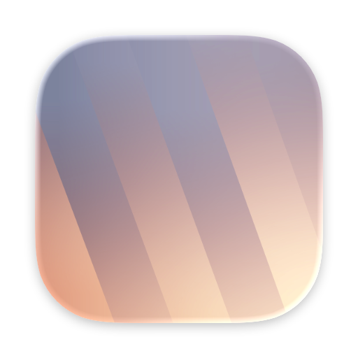

Lurent
Turns a photograph into a soft abstract wallpaper.
Endless variations, at your display's native resolution.

Turns a photograph into a soft abstract wallpaper.
Endless variations, at your display's native resolution.